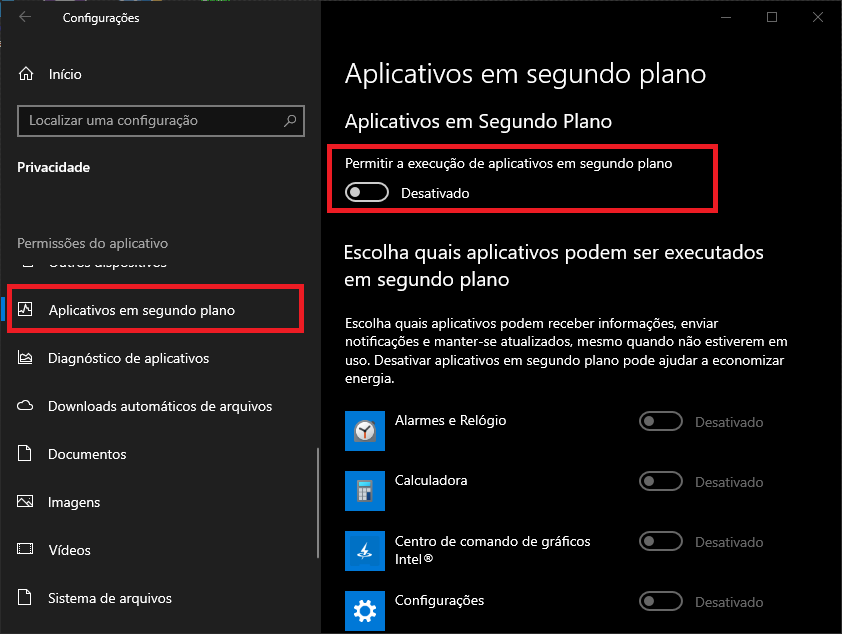
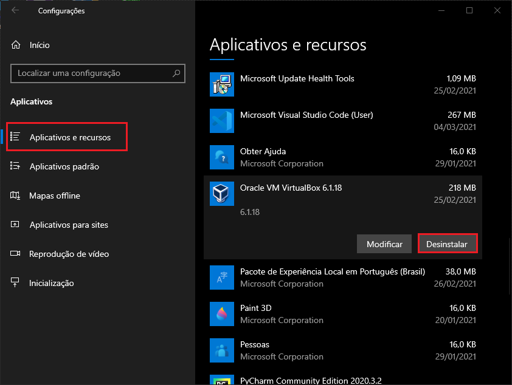
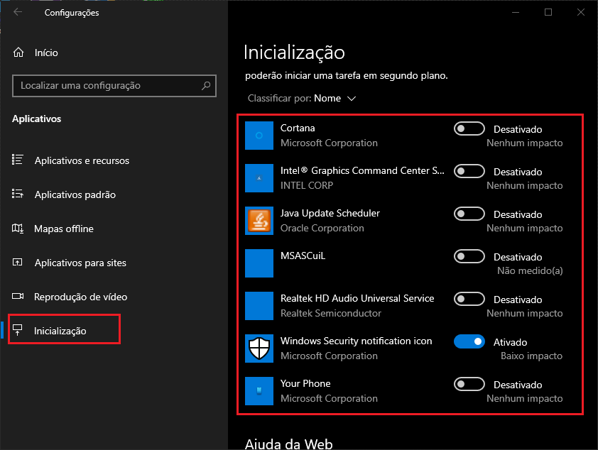
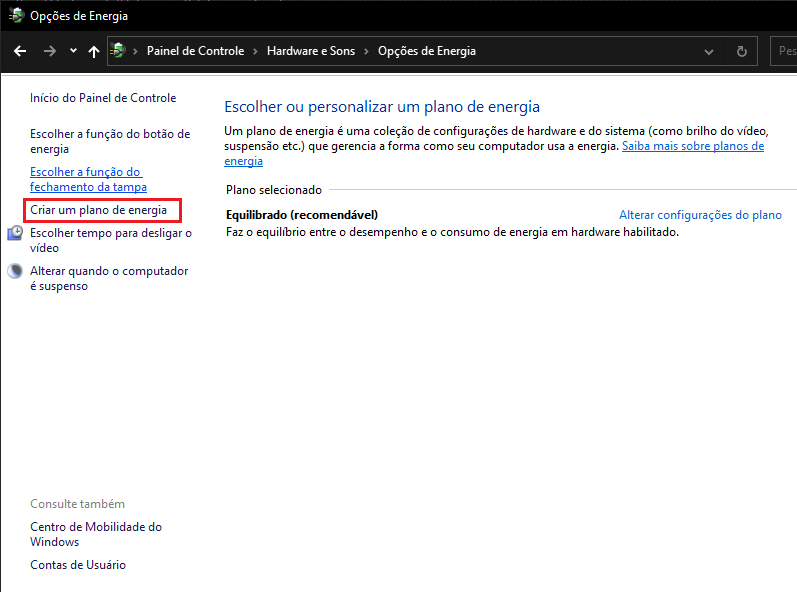
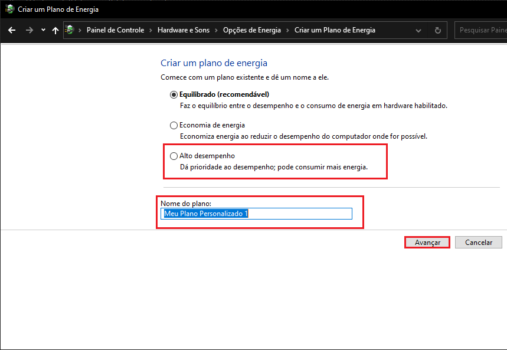
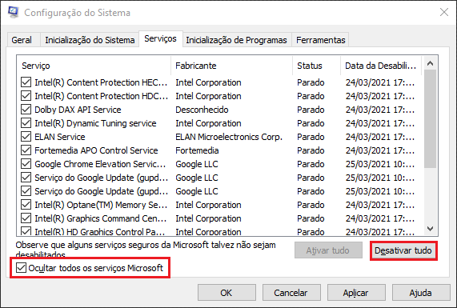
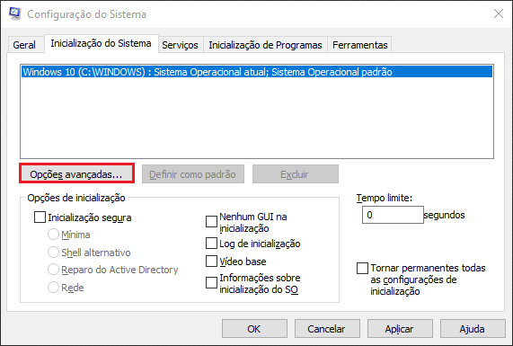
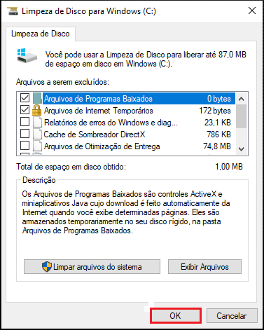
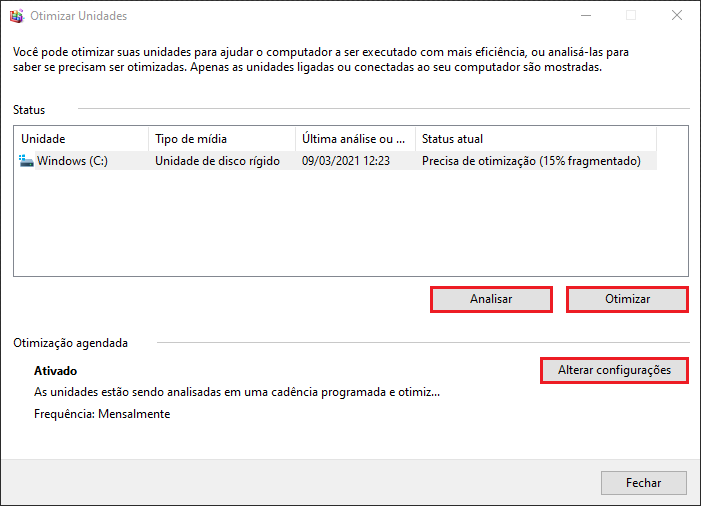
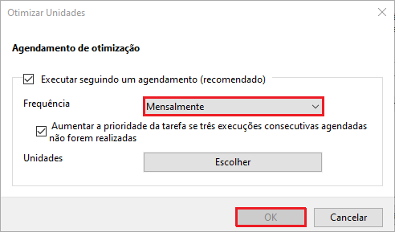

Configurações:
Algumas mudanças em Menu Iniciar > Configurações.
Vá em Privacidade > Aplicativos em Segundo Plano e desative a opção para permitir a execução.

Os aplicativos não serão afetados por isso, apenas irá limitar que eles continuem sendo executados depois de fecha-los.
Depois em Aplicativos > Aplicativos e Recursos, desinstale todos os Apps que você tiver certeza que não irá usar.

Ainda em Aplicativos em Inicialização desmarque os Apps que não queira que inicie com o Windows, se não houver nada de grande importância, deixe apenas o Windows Security.

Opções de Energia:
Agora vamos ajustar algumas configurações de como o notebook gerencia a bateria.
Na Área de Trabalho, no canto inferior direito clique com o botão direito no ícone de bateria, e depois em Opções de Energia.
Também é possivel fazer isso com o painel de controle, Menu Iniciar > Painel de Controle > Hardware e sons > Opções de Energia.

Nessa janela, terá varios planos para você selecionar, irei dar um aviso, se o notebook estiver conectado diretamente no carregador, use o Alto Desempenho, ele melhora o desempenho do processador, porém consome muita energia, então se estiver somente na bateria não o use.
Caso use na tomanda com bastante frequência, tire a bateria do notebook para ajudar na vida util, porque a longo prazo pode ficar viciada.
Aqui entre tanto nessa imagem especifica, não tem o plano de Alto Desempenho, então vamos cria-lo. Como na imagem a cima clique em Criar um plano de energia.
Você irá entrar numa janela como essa a cima, selecione a opção de Alto Desempenho e em baixo terá uma caixa de texto onde você pode nomear o plano, recomendo deixar o proprio nome do plano de energia, finalize com Avançar.
MSConfig:
Agora vamos para algumas configurações mais avançadas.
Clique com o botão Windows + R, escreva msconfig e de OK.

Abrirá um janelinha de configurações, lá em cima clique na aba Serviços.
Em baixo, marque a opção de Ocultar todos os serviços Microsoft e só depois disso clique em Desativar tudo.
Aqui irá desativar algumas funções de aplicativos, porém se esse item for essencial ele não será desativado de primeira, você terá que desativar manualmente e ainda ele pode ser iniciado pelo aplicativo se for necessário, então não há problemas de erros ou algo do tipo. Ele só parará de executar algumas coisas especificas.
Extras:
Coisas a mais para fazer no msconfig.
Na mesma janela, lá em cima clique na aba Inicialização do Sistema.
E depois em Opções Avançadas.
Abrirá essa janela.

Agora vamos ter algumas vertentes, se a caixa de seleção Número de processadores estiver desmarcada, não há nada para fazer.
Agora se ela estiver marcada, você terá 2 opções, você pode apenas desmarca-la ou selecionar o número máximo de processadores.
AVISO:
Crie um ponto de restauração antes de modificar essa opção.
Com ela desmarcada, será assumido o valor padrão que é o número máximo.
Essa opção define com quantos processadores(núcleos) serão usados pelo notebook ou computador.
App Nativos:
Ferramentas que recomendo que sejão usadas frequentemente.
Limpeza de Disco
Abra-o em Menu Iniciar > Ferramentas Administrativas > Limpeza de Disco.
Logo de cara aparecerá essa tela, não há muitos procedimentos, apenas dê um OK. Em seguida terá uma mensagem para confirmar, clique em Excluir Arquivos.
Essa ferramenta vai apagar alguns arquivos temporários do disco(HDD), porém a maioria dos arquivos .temp não são apagados, os famosos diretórios: Temp, %Temp% e prefetch. Com isso estou desenvolvendo um pequeno executável para apagar todos esses arquivos com 2 cliques MaidOS.
Desfragmentador de Disco
Agora ainda em Ferramentas Administrativas, vá em Desfragmentador de Disco
Primeiramente clique em Analizar e espere, se na unidade de Disco estiver como "Precisa de Otimização", clique em Otimizar(esse procedimento irá demorar um pouco). Quando terminado vá em Alterar configurações.
Se estiver desmarcada, marque a primeira caixinha e ponha a frequência em Mensalmente e clique em OK.
Essa ferramenta serve para organizar os dados na partição de disco(HDD), o modo de leitura e gravação de HDDs, cartões de memoria, SSDs e etc são de acesso aleatório, o que quer dizer que os dados não são gravados exatamente um atrás do outro, mas sim meio que aonde todo os bytes possam caber integralmente, o Desfragmentador tenta organizar um pouco. Isso acelera as coisas, invéz de ir até o final do disco para acessar algo, tudo já está meio que no começo num bloco só.
Porém esse processo de cópia muitas vezes em seguida a longo prazo pode fazer um SSD perder um pouco sua vida útil, por isso precisa deixar a frequência em Mensalmente.